x y
1 -3.028 39.64
2 -3.464 46.17
3 0.614 91.89
4 -7.937 14.63
5 -7.521 9.19
6 -11.298 62.74Краткое введение в мир линейной алгебры (Часть 3)
Вадим Хайтов, Марина Варфоломеева, Анастасия Лянгузова, Валентина Домашкина
Вы сможете
- Найти собственные значения и собственные векторы матрицы и объяснить их смысл.
- Переходить из исходной системы системы координат в систему координат, связанную с главными осями.
- Оценивать информативность главных осей.
- Изображать исходные данные в новой системе координат.
- Проводить сингулярное разложение любой матрицы.
- Убирать “лишнюю” информацию из матрицы.
Level 8: Собственные значения, собственные векторы и главные оси
Проблема
Пусть есть некоторый набор данных
Проекция на каждую из осей может не дать информацию о структуре многомерного облака. НО! Для двумерного случая эта проблема не так важна.
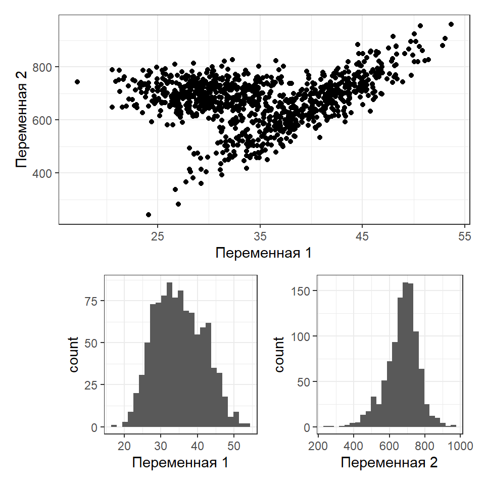
Как решить проблему разделения облаков?
Можно ввести некоторую новую систему координат
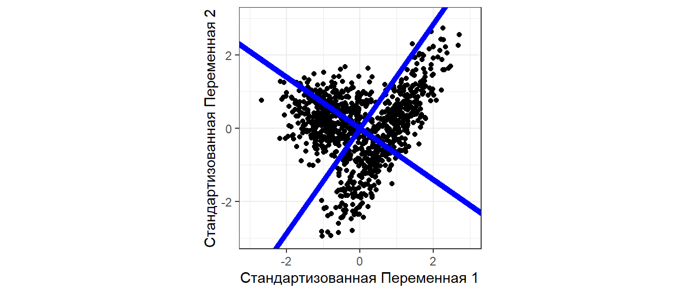
Проекции точек на новую ось координат дадут две совокупности.
Изменение системы координат - это одна из задач, которая решается методами матричной алгебры.
Переформулировка проблемы
В исходной матрице векторы могут быть неортогональны
Между векторами существует корреляция
Корреляция между переменными
Наличие корреляции между векторами - это проблема, так как в каждой из переменных “спрятана” информация и о другой переменной.
Задача сводится к тому, чтобы заменить исходные векторы (признаки) новыми комплексными признаками, которые были бы взаимно независимыми, то есть ортогональными.
Каждый из этих векторов несет определенную часть информации об исходной системе векторов (берет на себя некоторую долю общей дисперсии).
Собственные числа и собственные векторы
Связь между векторами в исходной матрице \(\textbf{Y}\) выражается через ковариационную матрицу \(\textbf{S}\) (или корреляционную матрицу \(\textbf {R}\)).
\(\textbf{S}\) - это квадратная симметричная матрица.
Задача сводится к тому, чтобы разложить матрицу \(\textbf{S}\) на две части
Первая часть. Вектор собственных значений \(\bf{\lambda}\), или, что то же самое, матрица \(\bf{\Lambda}\)
\[ \bf{\Lambda} = \begin{pmatrix} \lambda_{1} & 0 & \cdots & 0 \\ 0 & \lambda_{2} & \cdots & 0 \\ \vdots & \vdots & \ddots & \vdots \\ 0 & 0 & \cdots & \lambda_{p} \end{pmatrix} \]
По главной диагонали лежат собственные значения, все остальные значения равны нулю
Вторая часть. Каждому собственному значению \(\lambda_i\) ставится в соответствие так называемый собственный вектор \(\textbf{u}_i\). Совокупность собственных векторов формирует матрицу собственных векторов \(\textbf{U}\). Собственные векторы перпендикулярны друг другу (ортогональны).
Связь между матрицами
Связь между матрицей \(\bf{\Lambda}\) и \(\textbf{S}\) выражается следующим уравнением
\[ \textbf{S}\textbf{U} = \textbf{U}\bf{\Lambda} \]
где
\(\textbf{S}\) - матрица ковариации
\(\textbf{U}\) - матрица собственных векторов
\(\bf{\Lambda}\) - Диагональная матрица собственных значений
Разложение ковариационной матрицы
Если
\[ \textbf{S}\textbf{U} = \textbf{U}\bf{\Lambda} \]
то
\[ \textbf{S} = \textbf{U}\bf{\Lambda}\textbf{U}^{-1} \] НО!
Важное свойство: Если квадратная матрица состоит из ортогональных векторов (ортогональная матрица), то \(\textbf{X}^\prime = \textbf{X}^{-1}\)
Тогда
\[ \textbf{S} = \textbf{U}\bf{\Lambda}\textbf{U}^\prime \]
Разложение ковариационной матрицы
\[ \textbf{S} = \textbf{U}\bf{\Lambda}\textbf{U}' \]
Это позволяет раскладывать матрицу \(\textbf{S}\) на составляющие (eigenvalues decomposition, или спектральное разложение).
Каждое собственное число в матрице \(\bf{\Lambda}\) (и соответствующий ему вектор из матрицы \(\textbf{U}\)) несет часть информации об исходной матрице \(\textbf{S}\).
Разложение матрицы позволяет использовать не всю информацию, а только ее наиболее важную часть.
Геомтерическая интерпретация: Главные оси
Мерой количества информации может служить изменчивость, то есть дисперсия. Поэтому очень правильно было бы перейти к системе координат (осям), которые несли бы максимум информации. Это означает, что варьирование вдоль этих осей должно быть максимальным.
Именно это и позволяет сделать спектральное разложение ковариационной матрицы.
Геомтерическая интерпретация: Главные оси
Во многих многомерных методах требуется найти оси максимального варьирования
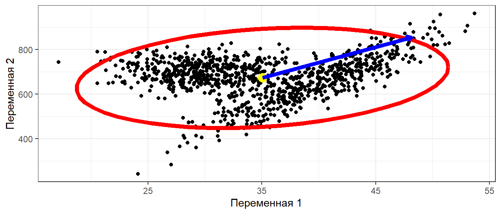
Главные оси проходят через центроид (\(\mathbf{\mu} = [\mu_1, \mu_2 \dots \mu_n]\)) и некоторую точку на поверхности эллипса (\(\mathbf{var} = [var_1, var_2 \dots var_n]\)).
Задача: найти такую точку.
Эта точка соответствует максимальной длине вектора, соединяющего центроид и данную точку.
Нормализуем векторы
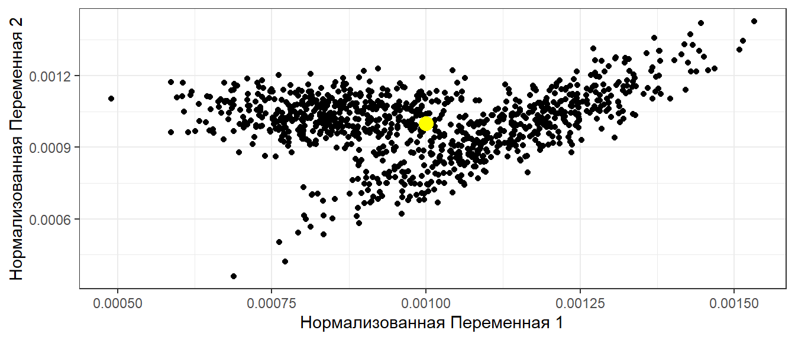
Центрируем нормализованные векторы
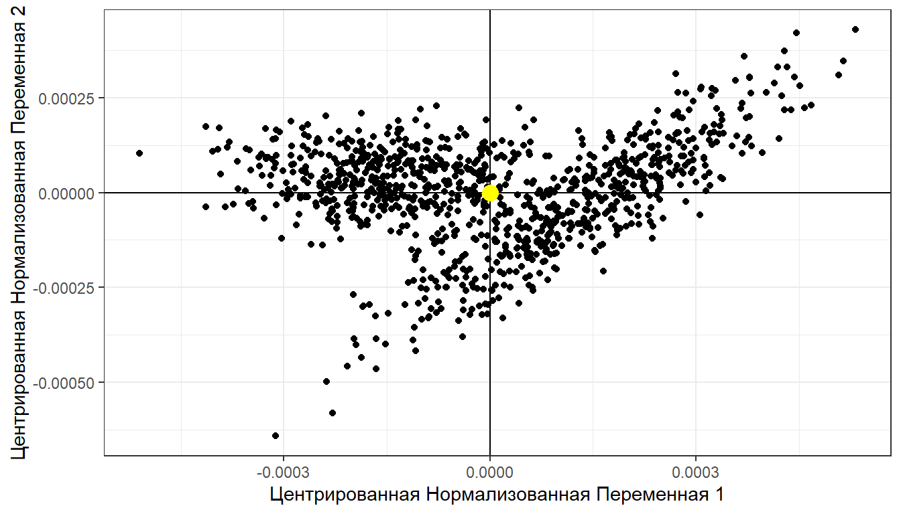
Находим ковариационную матрицу
\[ \textbf{S} = \frac{1}{n - 1} \textbf{Y}_{centered}'\textbf{Y}_{centered} \]
Находим собственные числа и собственные векторы
Собственные векторы ортогональны
Проверим
Стандартизованные собственные векторы
Собственные векторы безразмерны.
Но их можно масштабировать, выразив в величинах стандартных отклонений \(\textbf{U}_{scaled} = \textbf{U}\bf{\Lambda}^{1/2}\)
Почему так?
\(\textbf{U}_{scaled} \textbf{U}'_{scaled} = [\textbf{U}\bf{\Lambda}^{1/2}][\textbf{U}\bf{\Lambda}^{1/2}]' = \textbf{U}\bf{\Lambda}\textbf{U}' = \textbf{U}\bf{\Lambda}\textbf{U}^{-1} = \textbf{S}\)
Ковариационная матрица для стандартизованной матрицы собственных векторов совпадает с ковариационной матрицей исходной матрицы
Стандартизованные собственные векторы
Проверим…
[,1] [,2]
[1,] 0.00000003612 0.00000000548
[2,] 0.00000000548 0.00000001856Сравним
x y
x 0.00000003612 0.00000000548
y 0.00000000548 0.00000001856Рисуем собственные векторы
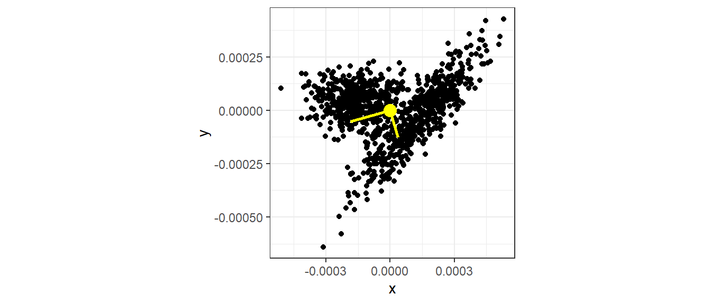
Собственные векторы задают “опору” для новых осей координат
Рисуем главные оси
Матрица собственных векторов
[,1] [,2]
[1,] -0.961 0.275
[2,] -0.275 -0.961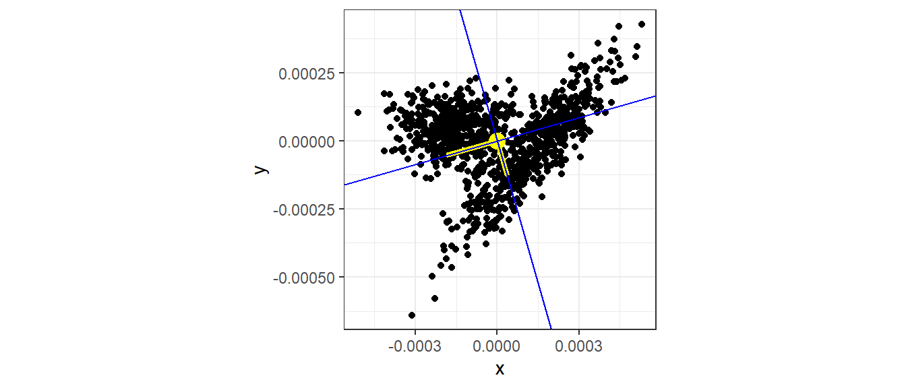
Для удобства восприятия лучше повернуть систему координат так, чтобы ось максимального варьирования была расположена горизонтально.
Вращение осей
Из Legendre & Legendre, 2012
\[ \cos(\alpha_{11}) = u_{11}\\ \cos(\alpha_{21}) = u_{21}\\ \cos(\alpha_{12}) = u_{12}\\ \cos(\alpha_{22}) = u_{22} \]
Вращающая матрица
Вращение осей
Новые оси
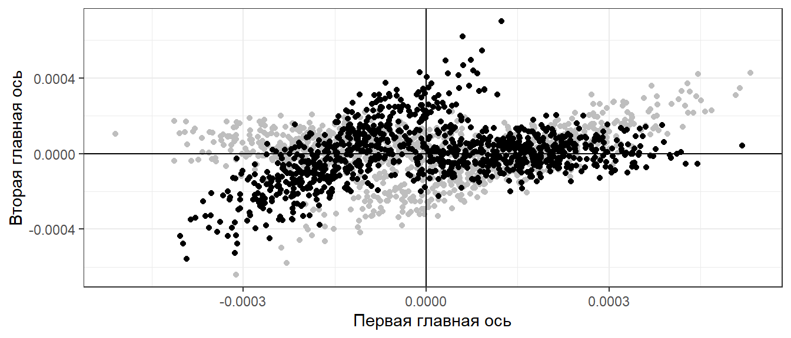
Вращение осей
Новые и старые главные оси
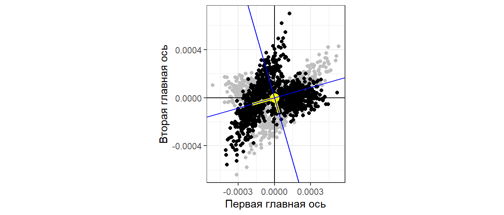
Проблема решена!
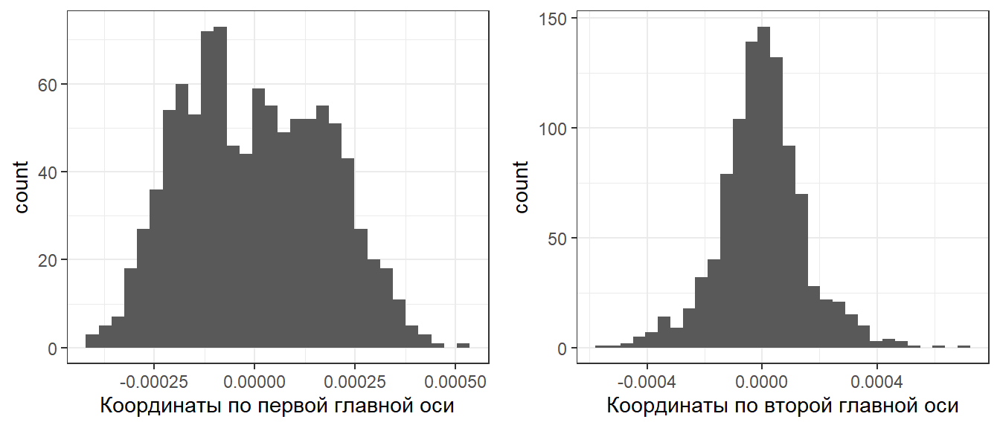
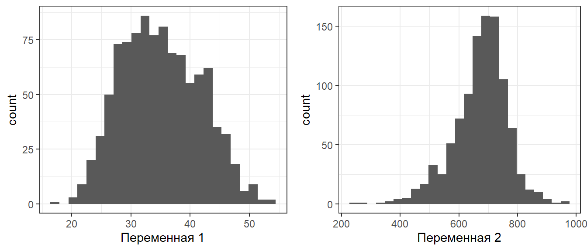
Кроме того! Теперь мы знаем, что первая главная ось отвечает за определенную долю дисперсии.
Главное о снижении размерности
1.Информацию об исходной матрице \(\textbf{Y}\) можно сконцентрировать в ковариационной матрице
\[ \textbf{S} = \frac{1}{n - 1} \textbf{Y}_{centered}'\textbf{Y}_{centered} \]
2.Матрицу ковариации можно разложить на собственные числа и собственные векторы
\[ \textbf{S} = \textbf{U}\bf{\Lambda}\textbf{U}^{-1} \]
3.Собственные векторы ортогональны и позволяют созадать новую систему координат. Новые оси (главные оси) “опираются” на собственные векторы.
4.Новые координаты точек могут быть вычислены так
\[ \bf {Y_{new} = Y \times U} \]
5.Каждая ось в новой системе координат несет некоторую часть информации об исходной системе координат. Информативность осей определяется величиной собственных чисел.
6.Вместо многомерной системы координат (n осей) мы можем использовать всего несколько (например, две) ниаболее информативные главные оси.
Задание
Исследуйте структуру матрицы X.
set.seed(123456789)
x1 <- c(rnorm(250, 30, 4), rnorm(250, 60, 4))
x2 <- rnorm(500, 70, 50)
x3 <- rnorm(500, 40, 5)
x4 <- c(rnorm(100, 10, 5), rnorm(100, 40, 5), rnorm(100, 70, 5), rnorm(200, 100, 5))
x5 <- c(rnorm(250, 50, 5), rnorm(250, 100, 5))
X <-data.frame(x1 = x1, x2 = x2, x3 = x3, x4 = x4, x5 = x5)- Постройте методами матричной алгебры ковариационную матрицу
- Проведите ее спектральное разложение (вычислите ее собственные числа и собственные векторы).
- Оцените информативность главных осей.
- Изобразите точки в пространстве первой и второй главной оси.
Решение
# Нормализуем векторы в исходной матрице
length_X <- apply(as.matrix(X), MARGIN = 2,
FUN = function(x) sqrt(sum(x^2)) )
X_norm <- X / length_X
X_norm_cent <- as.data.frame(scale(X_norm,
center = TRUE, scale = FALSE))
mX_norm_cent <- as.matrix(X_norm_cent)
Sx_norm_cent <- t(mX_norm_cent) %*% mX_norm_cent /(nrow(mX_norm_cent) - 1)
eig <- eigen(Sx_norm_cent)
Lambda <- eig$values
U <- eig$vectors
U_scaled <- U %*% sqrt(diag(Lambda))
PC <- as.matrix(X_norm_cent) %*% U Решение
Исходные данные в новой системе координат
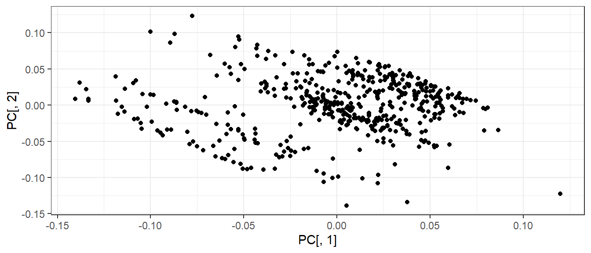
Информативность новых осей
Level 9: Сингулярное разложение матриц (Singular value decomposition)
Теорема Экарта-Янга
Любую прямоугольную матрицу \(\textbf{Y}\) можно представить в виде произведения трех матриц:
\[ \textbf{Y}_{n \times p} = \textbf{U}_{n \times p} \textbf{D}_{p \times p} \textbf{V}'_{p \times p} \]
То есть можно найти три “вспомогательных” матрицы, через которые можно выразить любую другую матрицу.
Теорема Экарта-Янга
\[ \textbf{Y}_{n \times p} = \textbf{U}_{n \times p} \textbf{D}_{p \times p} \textbf{V}'_{p \times p} \]
Здесь
\(\textbf{Y}_{n \times p}\) - любая прямоугольная матрица \(\begin{pmatrix}a_{11} & a_{12} & \cdots & a_{1c} \\ a_{21} & a_{22} & \cdots & a_{2p} \\ \vdots & \vdots & \ddots & \vdots \\ a_{r1} & a_{n2} & \cdots & a_{np} \end{pmatrix}\)
\(\textbf{D}_{p \times p}\) - диагональная матрица \(\begin{pmatrix} d_{11} & 0 & \cdots & 0 \\ 0 & d_{22} & \cdots & 0 \\ \vdots & \vdots & \ddots & \vdots \\ 0 & 0 & \cdots & d_{pp} \end{pmatrix}\)
По главной диагонали располагаются “особые” числа, называющиеся сингулярными числами. Сингулярные числа ранжируются от большего к меньшему.
\(\textbf{U}_{n \times p}\) и \(\textbf{V}_{p \times p}\) - левая и правая матрицы сингулярных векторов.
Сингулярное разложение матрицы средствами R
set.seed(123456789)
B <- matrix(round(runif(50, 1, 5)) , byrow = T, ncol=5) #Некоторая матрица
SVD <- svd(B) #Сингулярное Разложение матрицы B с помощью функции svd()
V <- SVD$v #"Вспомогательная" матрица - правые сингулярные векторы
D <- SVD$d #Вектор сингулярных чисел
U <- SVD$u #"Вспомогательная" матрица - левые сингулярные векторы [,1] [,2] [,3] [,4] [,5]
[1,] 4 4 4 4 5
[2,] 5 2 5 2 3
[3,] 1 4 3 2 3
[4,] 2 1 1 5 4
[5,] 2 3 4 1 2
[6,] 4 2 3 3 4
[7,] 1 3 2 4 5
[8,] 2 5 3 1 3
[9,] 4 3 4 4 1
[10,] 4 3 2 2 1Вычислим \(\textbf{U} \textbf{D} \textbf{V}'\)
[,1] [,2] [,3] [,4] [,5]
[1,] 4 4 4 4 5
[2,] 5 2 5 2 3
[3,] 1 4 3 2 3
[4,] 2 1 1 5 4
[5,] 2 3 4 1 2
[6,] 4 2 3 3 4
[7,] 1 3 2 4 5
[8,] 2 5 3 1 3
[9,] 4 3 4 4 1
[10,] 4 3 2 2 1Все восстановилось!
Задание
Вычислите матрицу, которая получится при использовании только 1 и 2 сингулярного числа для матрицы \(\textbf{B}\), использованной на предыдущем слайде.
Решение
[,1] [,2] [,3] [,4] [,5]
[1,] 3.89 4.00 4.10 4.27 4.75
[2,] 4.16 3.79 4.47 2.16 2.50
[3,] 2.53 2.55 2.68 2.50 2.79
[4,] 1.18 1.80 1.13 4.23 4.57
[5,] 3.03 2.73 3.27 1.41 1.64
[6,] 2.99 3.06 3.15 3.23 3.59
[7,] 1.79 2.32 1.79 4.38 4.76
[8,] 3.19 2.99 3.42 2.09 2.38
[9,] 3.67 3.41 3.93 2.24 2.56
[10,] 2.95 2.67 3.18 1.42 1.65Важное свойство сингулярных чисел
Если вычислить матрицу на основе не всех, а части сингулярных чисел, то новая матрица будет подобна исходной матрице.
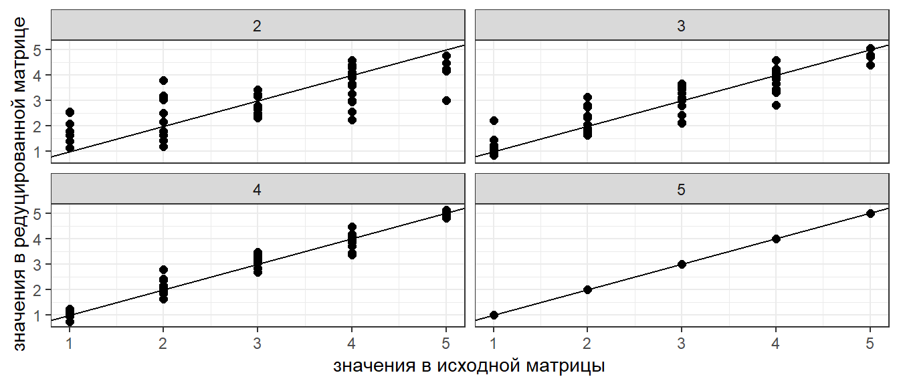
Применение свойства сингулярных чисел в сжатии изображений
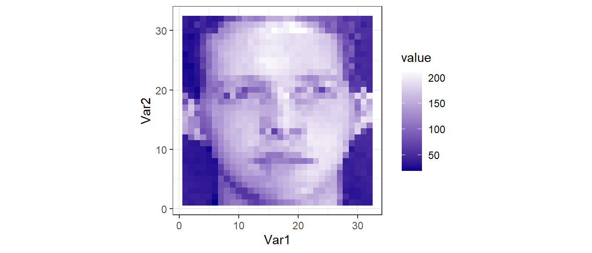
Пример взят из курса лекций “Data Analysis” by Jeffrey Leek
(https://github.com/jtleek/dataanalysis/tree/master/week3)
Произведем сингулярное разложение матрицы faceData
Рекоструируем изображение, используя только часть информации
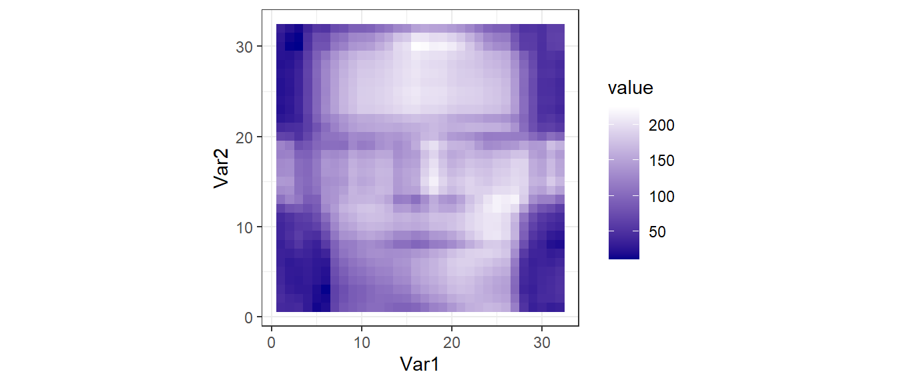
Применение SVD в биологических исследованиях
SVD - это метод, на котором основаны разные типы анализа, связанные со снижением размерности: PCA, CA, CCA, RDA.
О них в следующех лекциях
Summary
- Линейная алгебра позволяет решать самые разные типы задач.
- Матричные методы лежат в основе очень многих типов анализа.
- В основе многих методов снижения размерности лежит SVD.
Что почитать
- Legendre P., Legendre L. (2012) Numerical ecology. Second english edition. Elsevier, Amsterdam. Глава 2. Matrix algebra: a summary.
Not The End